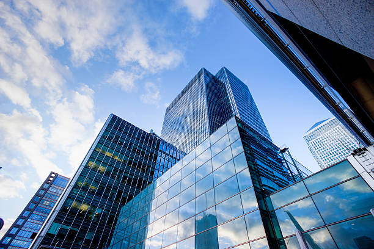
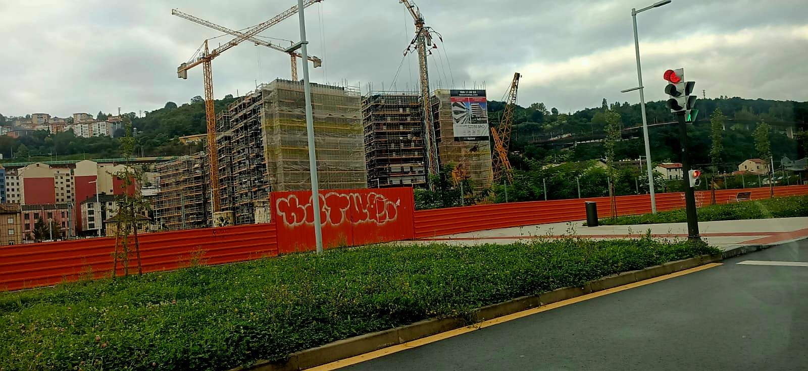

Montajes Electricos Electroled
Montajes Eléctricos Electroled es una empresa ubicada en Bilbao, fundada en 2014, especializada en ofrecer soluciones
de electricidad de baja tensión y telecomunicaciones para viviendas de obra nueva. Con una década de experiencia, la compañía se
ha consolidado como un referente en el sector gracias a su compromiso con la calidad, la innovación y el cumplimiento de los estándares técnicos más exigentes.
Nuestro equipo de profesionales altamente cualificados diseña e implementa instalaciones eléctricas eficientes, seguras y adaptadas a las necesidades de cada
proyecto. Además, ofrecemos servicios de telecomunicaciones que garantizan la conectividad moderna en los hogares, contribuyendo al desarrollo de espacios habitables
cómodos y tecnológicamente avanzados.
En Montajes Eléctricos Electroled, nuestra misión es proporcionar un servicio integral que combine precisión técnica, cumplimiento de plazos y un trato cercano al cliente,
convirtiéndonos en un socio de confianza para constructores y promotores inmobiliarios en la región de Bilbao y sus alrededores.
Obras en ejecución

Viviendas en Zorrozaurre, Bilbao
26 viviendas Durango